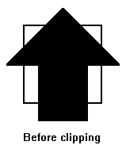
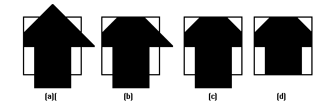
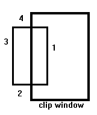

The Sutherland - Hodgman algorithm performs a clipping of a polygon against each window edge in turn. It accepts an ordered sequence of verices v1, v2, v3, ..., vn and puts out a set of vertices defining the clipped polygon.
 This figure represents a polygon (the large, solid, upward pointing arrow) before clipping has occurred.
The following figures show how this algorithm works at each edge, clipping the polygon.

As the algorithm goes around the edges of the window, clipping the polygon, it encounters four types of edges. All four edge types are illustrated by the polygon in the following figure. For each edge type, zero, one, or two vertices are added to the output list of vertices that define the clipped polygon.

The four types of edges are:
Assume that we're clipping a polgon's edge with vertices at (x1,y1) and (x2,y2) against a clip window with vertices at (xmin, ymin) and (xmax,ymax).
The location (IX, IY) of the intersection of the edge with the left side of the window is:
The location of the intersection of the edge with the right side of the window is:
The intersection of the polygon's edge with the top side of the window is:
Finally, the intersection of the edge with the bottom side of the window is:
From P. Asokarathinam -- see details 27.11.1996